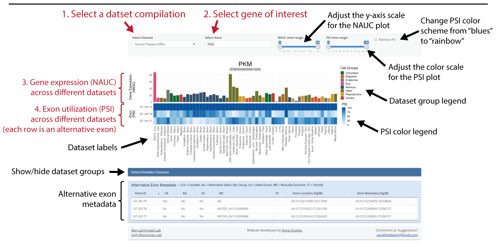

ASCOT is a resource that allows users to query alternative splicing and gene expression across tens of thousands of public RNA-Seq datasets. ASCOT provides data on a wide range of cell types and tissues from mouse and human.
There are several compilations to choose from:
MESA - mouse cell types and tissues from bulk RNA-Seq data
CellTower - mouse cell types from single-cell RNA-Seq data
GTEx - human tissues from the Genotype-Tissue Expression project (+ eye tissue)
ENCODE - human HepG2 and K562 cells, shRNA-Seq knockdown datasets from the ENCODE project
Please see our bioRxiv preprint for more details
